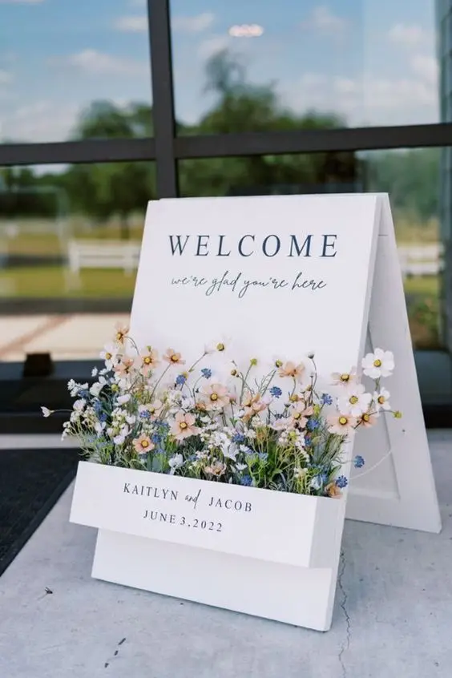
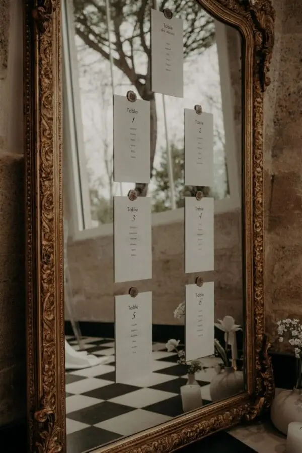
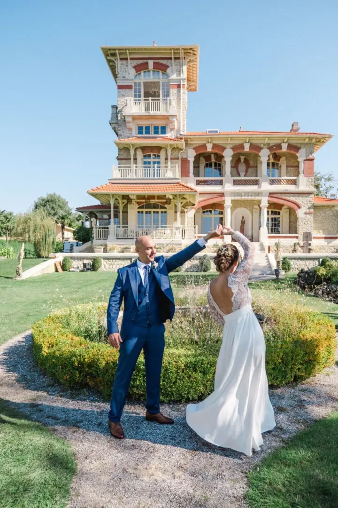
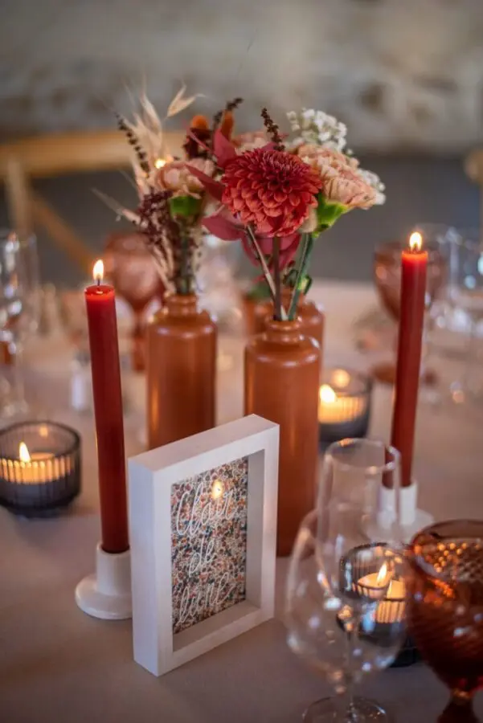
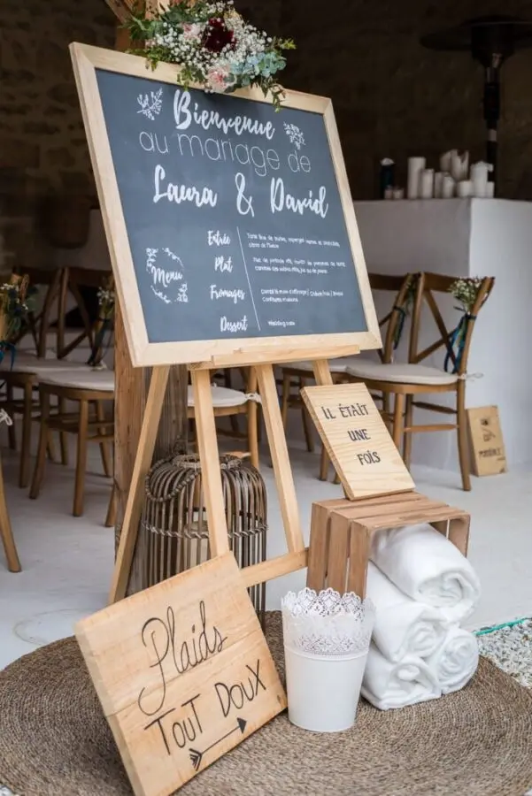
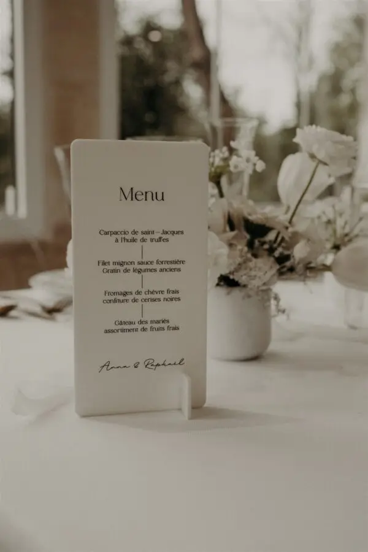
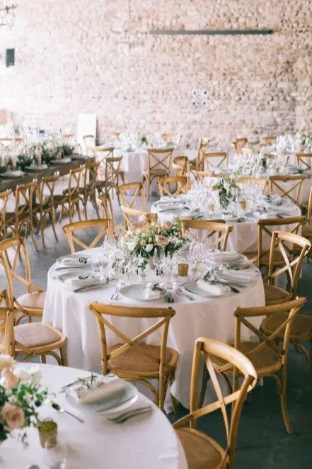
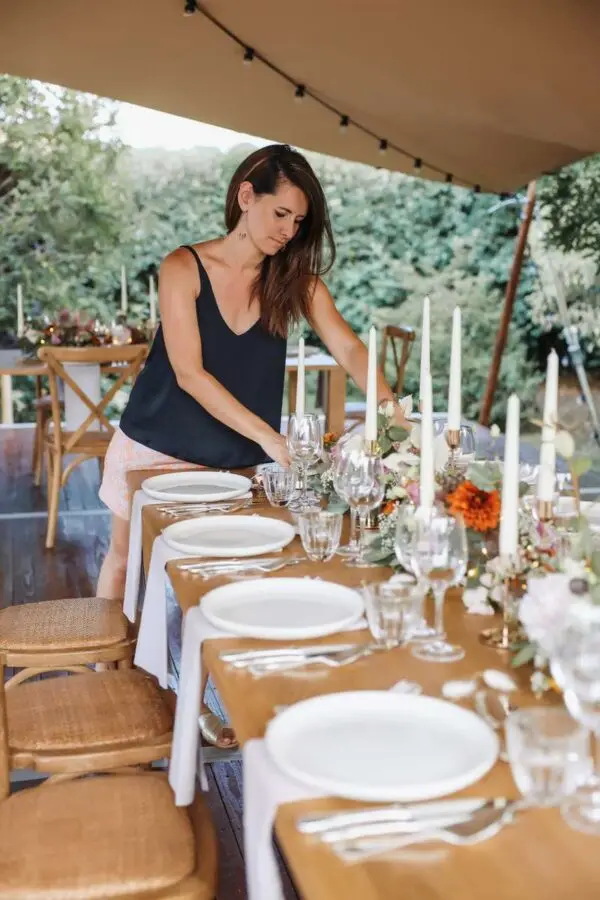
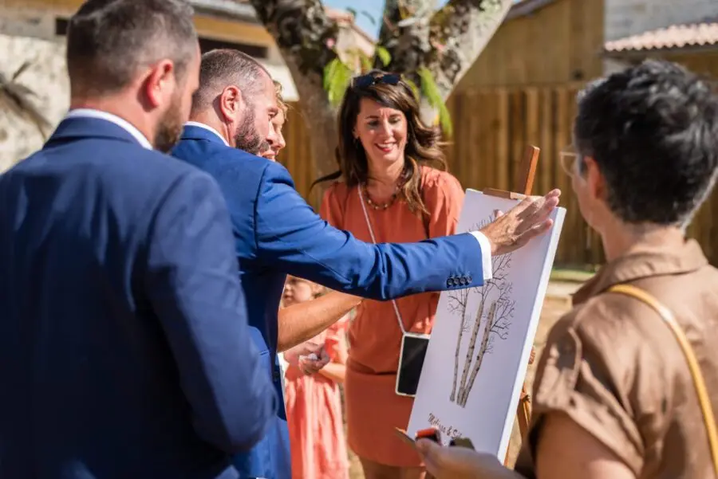
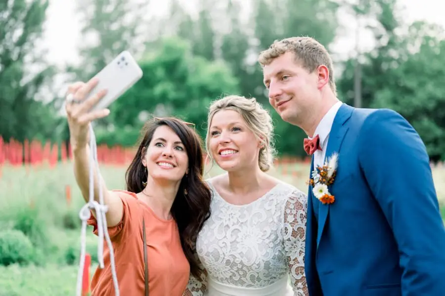

Les fondations du métier
Comprendre le métier de Wedding Planner
Savoir surfer entre compétences professionnelles, aptitudes émotionnelles et gestion des responsabilités, le métier de Wedding Planner est bien plus qu'organiser un événement. Etre wedding planner, c’est savoir coordonner chaque prestataire, répondre aux demandes des clients et être une épaule sur laquelle se reposer durant tous les préparatifs, penser aux moindre détails de la planification à l'exécution. L'une des plus grandes satisfactions du métier de wedding planner est sans doute la capacité à transformer les rêves des clients en réalité. Chaque mariage est une toile vierge sur laquelle le wedding planner peut laisser libre cours à sa créativité tout en respectant le budget et les décisions des futurs mariés. Que ce soit en transformant une salle classique en un décor de conte de fées ou en intégrant des éléments culturels uniques dans la cérémonie, la possibilité de créer des événements mémorables est infinie. De plus, l'innovation joue un rôle crucial dans ce domaine. Les wedding planner doivent rester à l'affût des dernières tendances de mariage, qu'il s'agisse de concepts de mariage écologique, de mariages à thème ou de nouvelles expériences. En repoussant les limites de la tradition, les wedding planner peuvent offrir à leurs clients leurs mariages uniques et personnalisés qui resteront gravés dans leur mémoire pour les années à venir.
Se former et acquérir des compétences
Les compétences clés
Animée par une passion pour les mariages, ce métier exige certains soft skills tel qu’une grande créativité, du perfectionnisme et une bonne gestion en communication pour garantir la réussite de l'événement et la satisfaction des clients. La gestion du stress et la capacité à résoudre rapidement les problèmes sont également essentielles pour assurer le bon déroulement des mariages.
Suivre une formation spécialisée
Suivre une formation spécialisée en wedding planning est un excellent moyen d'acquérir les connaissances et les compétences nécessaires pour réussir dans ce domaine. Ces formations couvrent des sujets essentiels tels que la gestion de projet, la planification d'événements, le marketing et les relations avec les clients. Elles offrent également des opportunités de stages et de créer du réseau, permettant d'acquérir une expérience pratique et de se familiariser avec les réalités du métier.
Développer des compétences pratiques
De plus, de la formation spécialisée, il est essentiel de développer des Hard skills. Cela peut inclure des stages auprès de professionnels établis, des missions bénévoles lors d'événements, ou même l'organisation de petits événements pour acquérir de l'expérience. En pratiquant activement la gestion de projets, la coordination d'équipes et la résolution de problèmes réels, les futurs wedding planners peuvent renforcer leurs compétences et leur confiance dans leur capacité à réussir dans ce domaine exigeant.













Les missions de Wedding Planner
Consultation initiale avec les clients
Rencontrer les futurs mariés pour discuter de leurs besoins, de leurs attentes et de leur vision pour leur mariage.
Gestion du budget
Aider les clients à établir un budget réaliste et à le respecter tout au long du processus de planification.
Recherche et réservation des lieux de réception
Identifier et visiter les lieux potentiels, négocier les contrats et coordonner les réservations.
Sélection et coordination des prestataires
Recommander et engager des prestataires tels que traiteurs, photographes, DJ, fleuristes, musiciens, et coordonner leurs services.
Conception et gestion du calendrier de planification
Élaborer un calendrier détaillé des tâches à accomplir et des échéances à respecter, en collaboration avec les clients.
Assistance à la conception du thème et du style du mariage
Aider les clients à définir un thème ou un style pour leur mariage et à choisir des éléments de décoration en conséquence.
Gestion des invitations et de la liste des invités
Aider à concevoir, envoyer et suivre les réponses aux invitations, ainsi qu'à gérer la liste des invités.
Coordination des répétitions et des cérémonies
Organiser et superviser les répétitions de la cérémonie et coordonner le déroulement de la cérémonie elle-même.
Gestion des détails logistiques
Organiser le transport, l'hébergement et les autres aspects logistiques pour les mariés et les invités, si nécessaire.
Gestion des imprévus
Être prêt à résoudre rapidement les problèmes et les imprévus qui pourraient survenir avant ou pendant le mariage.
Coordination du jour du mariage
Superviser toutes les activités le jour du mariage, du début à la fin, pour garantir un déroulement fluide de l'événement.
Suivi post-mariage
S'assurer que tous les contrats sont respectés, aider à coordonner le démontage et le nettoyage des lieux, et recueillir les commentaires des clients pour améliorer les services à l'avenir.
Lancer et développer votre activité
Créer et promouvoir votre marque
Comment construire un réseau professionnel ?
Un réseau professionnel peut vous ouvrir des portes, vous connecter avec d'autres professionnels de l'industrie tels que les prestataires multiples. Les contacts peuvent non seulement vous fournir des recommandations et des opportunités de collaboration, mais aussi vous permettre d'accéder à des ressources précieuses et à des informations sur les tendances du marché. Il existe quelques tips pour se faire des contacts tel que participer à des événements de ce domaine ou encore utiliser les réseaux sociaux.
Les étapes de la création d'entreprise
La création d'une entreprise de wedding planner implique plusieurs étapes essentielles : · Définir Votre Concept : Identifiez votre niche et votre positionnement sur le marché. Quels types de mariages allez-vous planifier ? Quelle sera votre proposition de valeur unique ? Déterminez votre vision et vos objectifs pour votre entreprise. · Élaborer un Business Plan : Établissez un plan d'affaires détaillé qui comprend une analyse de marché, une étude de la concurrence, une stratégie marketing, un plan financier et une projection de revenus. Un business plan solide servira de feuille de route pour le lancement et la croissance de votre entreprise. · Choisir une Structure Juridique : Sélectionnez la structure juridique la plus appropriée pour votre entreprise. · Enregistrer Votre Entreprise : Effectuez les démarches administratives nécessaires pour enregistrer votre entreprise auprès des autorités compétentes. · Développer votre marque : Il est crucial de développer une stratégie de marketing efficace. Cela inclut la création d'une identité de marque forte, comprenant un nom d'entreprise, un logo et des couleurs distinctives. Cela peut également inclure la création d'un site web professionnel, la publication régulière sur les réseaux sociaux pour partager votre travail. Une stratégie de marketing bien conçue peut vous aider à attirer des clients et à développer votre activité avec succès. · Acquérir les outils et ressources nécessaires : Investissez dans les outils et les ressources nécessaires pour gérer efficacement votre entreprise, tels que des logiciels de gestion de projet, des outils de marketing en ligne, et des systèmes de gestion de la relation client (CRM). · Lancer vos services : Une fois que tous les aspects de votre entreprise sont en place, lancez officiellement vos services de wedding planner.
Comment l’agence Lovely Day Event a vu le jour ?
Après plusieurs mois de formation en distanciel, j’ai pu acquérir les outils nécessaires pour démarrer mon activité et approfondir les compétences dont j’avais besoin pour créer ma société. J’ai lancé Lovely Day Event en micro-entreprise en 2014.Après avoir fait plusieurs salons du mariage, des shootings d’inspiration et développer mon réseau, j’ai pu avoir la chance d’accompagner des dizaines de mariés. Force de proposition et très engagée pour les mariés, j’assure un mariage de qualité.





© Tristan PerrierEn bref...
Devenir wedding planner est bien plus qu'une simple profession, c'est une vocation qui demande un mélange unique de compétences, de dévouement et de créativité . Ce métier exige une aptitude à comprendre les clients , une capacité à transformer leurs rêves en réalité et une bonne gestion pour chaque aspect de la planification d'un mariage . La créativité joue un rôle crucial, permettant au wedding planner de concevoir des événements uniques et mémorables qui reflètent la personnalité et le style de chaque couple. Pour réussir en tant que wedding planner, il est essentiel de suivre une formation spécialisée et d'acquérir des compétences pratiques dans la gestion de projet, la communication et la résolution de problèmes. De plus, établir un réseau professionnel solide est indispensable pour accéder aux ressources et aux opportunités nécessaires dans l'industrie du mariage. En offrant un service exceptionnel, en dépassant les attentes des clients et en restant à l'avant-garde des tendances de l'industrie, le wedding planner peut non seulement réaliser les rêves des couples, mais aussi bâtir une réputation solide et durable dans le secteur. En fin de compte, être témoin de la joie et du bonheur des mariés lors de leur journée spéciale est la récompense ultime pour ceux qui choisissent cette profession passionnante et gratifiante.